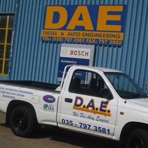

19 Copper Corner
Alton, Richards BayKwaZulu-Natal, 3900Open Google Maps ↗
Call 035 797 3581 before your visit to discuss your requirements and confirm availability.

Call 035 797 3581 before your visit to discuss your requirements and confirm availability.